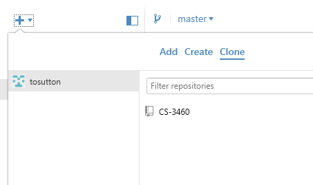
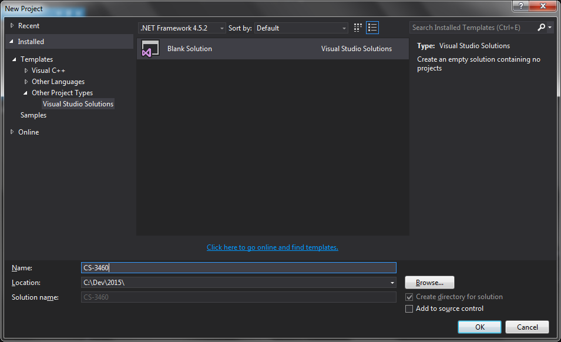
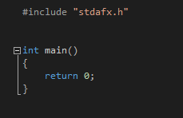
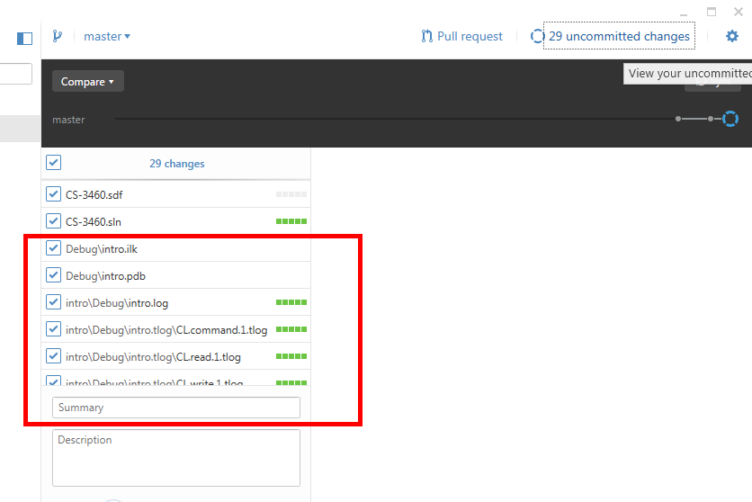
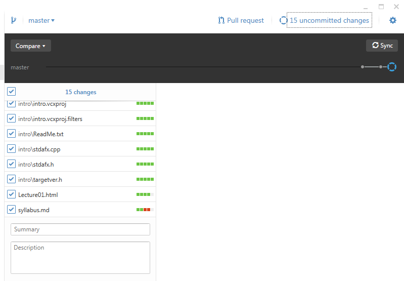
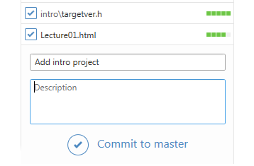
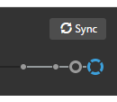

Create a repo on github. You should probably name it "CS-3604" or something similar. All your programming assignments will go here.
Clone the repo some folder on your computer.
Open Visual Studio and create an Empty Solution. Name it "CS-3460". Make sure the Location field is set to the parent directory of the folder where you cloned your repo.
Add a new Win32 Console Application project named "intro" to your solution. You should see something like this:
This is the basic template that we'll be using all semester.
Add the following line:
printf("Hello, world.\n");
Then build and run your program. It should print the words "Hello, world."
Commit your changes, and push them to your master repo on github.
Visual Studio produces lots of files during the build process that shouldn't be pushed into the master repo. Download the .gitignore file from the class repo and replace yours to prevent git from adding these files.
Add a summary and description of the changes, like "Initial Commit" and click "Commit to master".
Add a summary and description of the changes, like "Initial Commit" and click "Commit to master".
Now click on the Sync button. This will sync your local repo to github. Congratulations! you've completed the first homework assignment. Hopefully you'll get an A.
